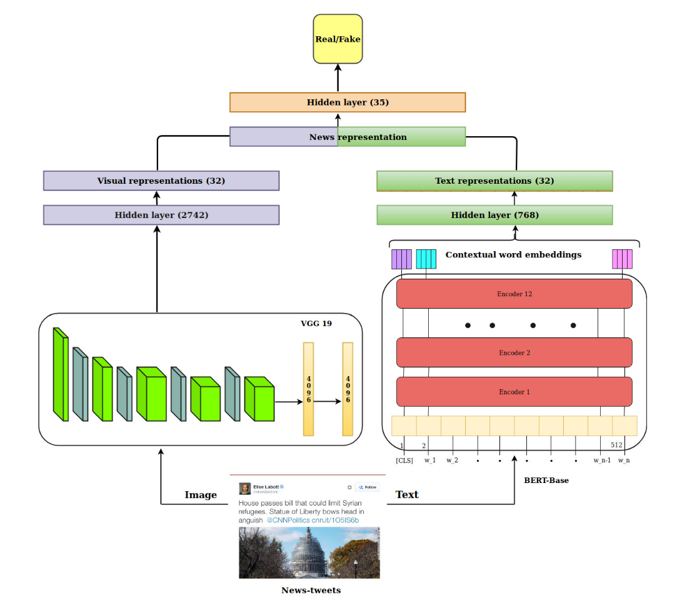

SpotFake
Introduction
Title: SpotFake: A Multi-modal Framework for Fake News Detection
Authors: Shivangi Singhal, Rajiv Ratn Shah, Tanmoy Chakraborty, Ponnurangam Kumaraguru, Shin’ichi Satoh
Abstract: A rapid growth in the amount of fake news on social media is a very serious concern in our society. It is usually created by manipulating images, text, audio, and videos. This indicates that there is a need of multimodal system for fake news detection. Though, there are multimodal fake news detection systems but they tend to solve the problem of fake news by considering an additional sub-task like event discriminator and finding correlations across the modalities. The results of fake news detection are heavily dependent on the subtask and in absence of subtask training, the performance of fake news detection degrade by 10% on an average. To solve this issue, we introduce SpotFake-a multi-modal framework for fake news detection. Our proposed solution detects fake news without taking into account any other subtasks. It exploits both the textual and visual features of an article. Specifically, we made use of language models (like BERT) to learn text features, and image features are learned from VGG-19 pre-trained on ImageNet dataset. All the experiments are performed on two publicly available datasets, i.e., Twitter and Weibo. The proposed model performs better than the current state-of-the-art on Twitter and Weibo datasets by 3.27% and 6.83%, respectively.
Running with Faknow
Model Hyper-Parameters:
text_fc2_out (int, optional) ``: Output size for the text FC2 layer. Defaults to ``32.text_fc1_out (int, optional) ``: Output size for the text FC1 layer. Defaults to ``2742.dropout_p (float, optional): Dropout probability. Defaults to0.4.fine_t une_text_module (bool, optional): Fine-tune text module. Defaults toFalse.img_fc1_out (int, optional): Output size for the image FC1 layer. Defaults to2742.img_fc2_out (int, optional): Output size for the image FC2 layer. Defaults to32.fine_tune_vis_module (bool, optional): Fine-tune visual module. Defaults toFalse.fusion_output_size (int, optional): Output size for the fusion layer. Defaults to35.loss_func (nn.Module, optional): Loss function. Defaults tonn.BCELoss().pre_trained_bert_name (str, optional)` : Name of the pre-trained BERT model. Defaults to ``"bert-base-uncased".batch_size (int, optional): Batch size. Defaults to8.epochs (int, optional): Number of training epochs. Defaults to50.max_len (int, optional): Maximum length for tokenization. Defaults to500.lr (float, optional): Learning rate. Defaults to3e-5.metrics (List, optional): List of evaluation metrics. Defaults toNone.device (str, optional): Device to run the training on (‘cpu’ or ‘cuda’). Defaults to'cuda:0'.
A Running Example:
Write the following code to a python file, such as run.py
from faknow.run.content_based.multimodal import run_spotfake
run_spotfake(train_path=, validate_path=, test_path=)
And then:
python run.py
If you want to change parameters, dataset or evaluation settings, take a look at